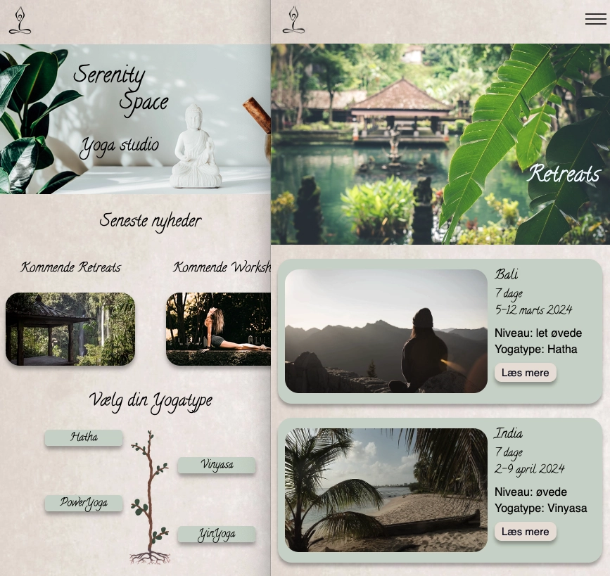
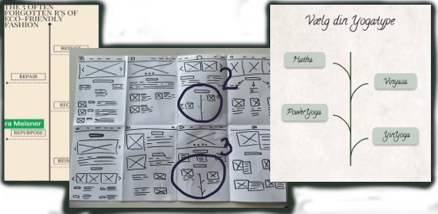
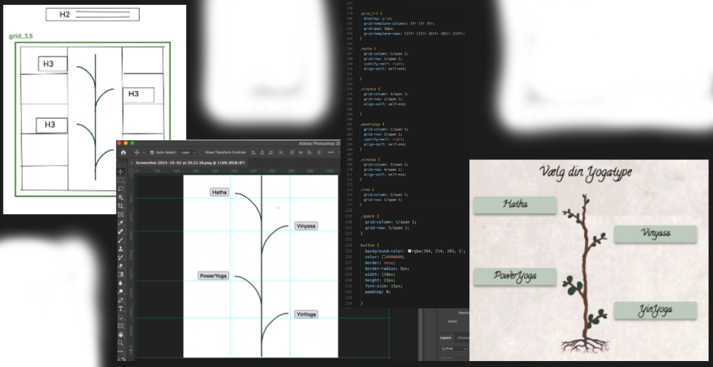

I tema 3 fik vi til opgave at lave en hjemmeside om et valgfrit emne med et formål for brugeren
på sitet. Jeg har
designet en hjemmeside om et yogastudio og har lært om skabelsesprocessen af websiden fra
bunden.
Link til hjemmesiden her
I inspiration- og ideudviklingsdelen af opgaven benyttede jeg "lightning demo" og "sketching 4
steps" metoderne for at
afprøve flere forskellige UX-prototyper. Da formålet med sitet var at skabe en rolig og
brugervenlig webside, forsøgte
jeg at gøre siden gennemskuelig og samtidig minimere tekstmængden, men med mulighed for at læse
mere, hvis man ønsker
det.

Gennem "lightning demo", blev jeg for eksempel inspireret til et design der kan præsentere de
forskellige yogatyper.
Gennem øvelsen "Crazy 8" udviklede denne idé sig og tog form som et træ med grene i form af
knapper, der repræsenterer
hver type af yoga. Da jeg havde fundet frem til et godt design, der kommunikerede korrekt, var
det tid til at
implementere designet.
Jeg har brugt Adobe Illustrator til at tegne træstammen og brugte HTML til at lave knapperne,
som jeg har stylet med
CSS.
Med et grid layout skulle jeg finde ud af præcis, hvor grenene mødte knapperne. Her brugte jeg
Photoshop til at måle
koordinaterne af knapperne, så det kunne tilpasses både mobil- og desktop-versionen.


Efter forløbet er jeg blevet i stand til at skabe en velfungerende hjemmeside ved brug af
udvalgte UX/UI-metoder og har
fået erfaring med, hvordan jeg effektivt kan præsentere min designproces, udvikling af et
produkt samt mine forsknings-
og testresultater.
Link til PowerPoint præsentation her
Screenshots fra processdokumentation